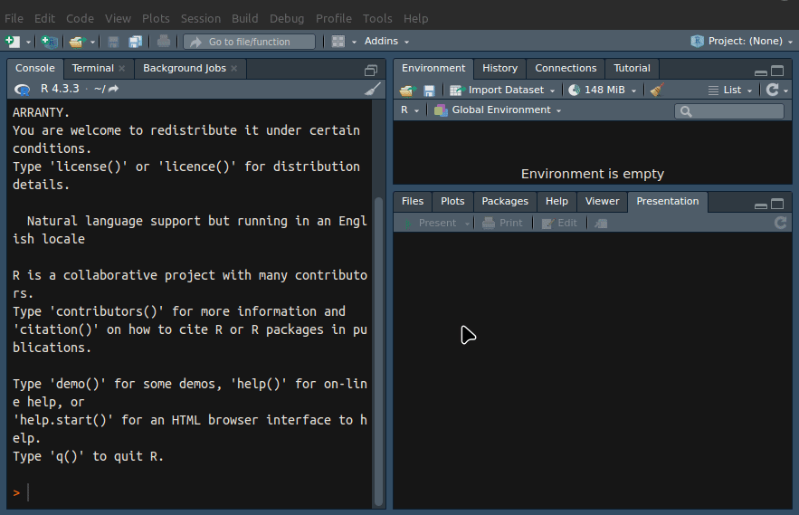
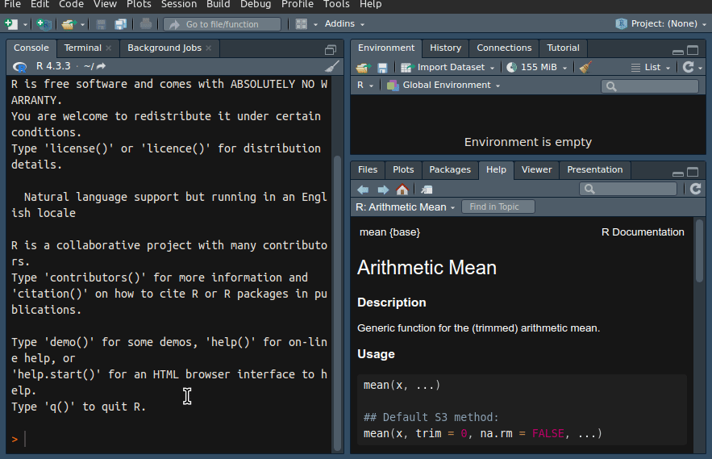
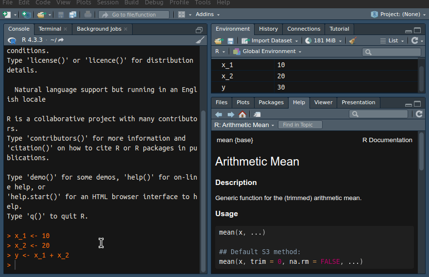
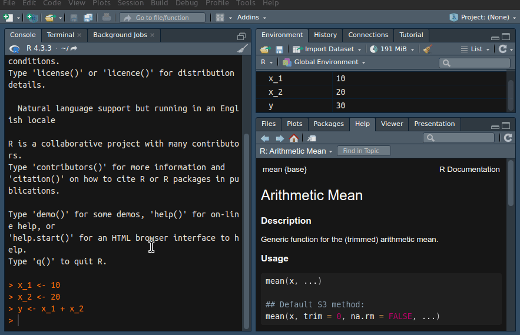
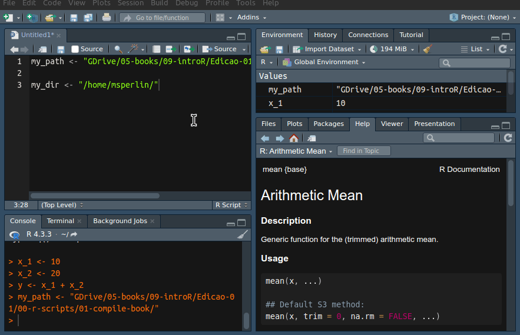

3 Introdução ao RStudio
Após instalar os dois programas, R e RStudio, procure o ícone do RStudio na área de trabalho ou via menu Iniciar. Note que a instalação do R inclui um programa de interface e isso muitas vezes gera confusão. Verifique que estás utilizado o software correto. A janela resultante deve ser igual a figura Figure 3.1, apresentada a seguir.
Observe que o RStudio automaticamente detectou a instalação do R e inicializou a sua tela no lado esquerdo. Caso não visualizar uma tela parecida ou chegar em uma mensagem de erro indicando que o R não foi encontrado, repita os passos de instalação do capítulo anterior (seção @ref(instalacao)).
Alternativa ao RStudio
Este capítulo inteiro é dedicado ao uso do RStudio, o qual entendo ser um dos melhores ambientes de desenvolvimento para o R. Alternativamente, um grande concorrente é o vscode, o qual oferece uma plataforma agnóstica a linguagem de programação, funcionando para R, Python ou qualquer outra lingaguem. Em projeto que envolve múltiplas linguagens, o vscode é ótimo e fácil de usar.
Como um primeiro exercício, clique em File, New File e R Script. Após, um editor de texto deve aparecer no lado esquerdo da tela do RStudio. É nesse editor que iremos inserir os nossos comandos, os quais são executados de cima para baixo, na mesma direção em que normalmente o lemos. Note que essa direção de execução introduz uma dinâmica de recursividade: cada comando depende do comando executado nas linhas anteriores. Após realizar os passos definidos anteriormente, a tela resultante deve ser semelhante à apresentada na figura Figure 3.2.

Importante
Uma sugestão importante aqui é modificar o esquema de cores do RStudio para uma configuração de tela escura. Não é somente uma questão estética mas sim de prevenção e melhoria de sua saúde física. Possivelmente irás passar demasiado tempo na frente do computador. Assim, vale a pena modificar as cores da interface para aliviar seus olhos do constante brilho da tela. Dessa forma, conseguirás trabalhar por mais tempo, sem forçar a sua visão. Podes configurar o esquema de cores do RStudio indo na opção Tools, Global Options e então em Appearance. Um esquema de cores escuras que pessoalmente gosto e sugiro é o Ambience.
Após os passos anteriores, a tela do RStudio deve estar semelhante a Figura Figure 3.2, com os seguintes itens/painéis:
Editor de scripts (Script editor): localizado no lado esquerdo e acima da tela. Esse painel é utilizado para escrever código e é onde passaremos a maior parte do tempo.
Console do R (R prompt): localizado no lado esquerdo e abaixo do editor de scripts. Apresenta o prompt do R, o qual também pode ser utilizado para executar comandos. A principal função do prompt é testar código e apresentar os resultados dos comandos inseridos no editor de scripts.
Área de trabalho (Environment): localizado no lado direito e superior da tela. Mostra todos os objetos, incluindo variáveis e funções atualmente disponíveis para o usuário. Observe também a presença do painel History, o qual mostra o histórico dos comandos já executados.
Pacotes (Panel Packages): mostra os pacotes instalados e carregados pelo R. Um pacote é nada mais que um módulo no R, cada qual com sua finalidade específica. Observe a presença de quatro abas: Files, para carregar e visualizar arquivos do sistema; Plots, para visualizar figuras; Help, para acessar o sistema de ajuda do R e Viewer, para mostrar resultados dinâmicos e interativos, tal como uma página da internet.
Como um exercício introdutório, vamos inicializar duas variáveis. Dentro do console do R (lado esquerdo inferior), digite os seguintes comandos e aperte enter ao final de cada linha. O símbolo <- é nada mais que a junção de < com -. O símbolo ' representa uma aspa simples e sua localização no teclado Brasileiro é no botão abaixo do escape (esc), lado esquerdo superior do teclado.
# set x and y
x <- 1
y <- 'my text'Após a execução, dois objetos devem aparecer no painel Environment, um chamado x com o valor 1, e outro chamado y com o conjunto de caracteres 'my text'. O histórico de comandos na aba History também foi atualizado com os comandos utilizados anteriormente.
Agora, vamos mostrar na tela os valores de x. Para isso, digite o seguinte comando no prompt e aperte enter novamente:
# print x
print(x)R> [1] 1A função print() é uma das principais funções para mostrarmos valores no prompt do R. O texto apresentado como [1] indica o índice do primeiro número da linha. Para verificar isso, digite o seguinte comando, o qual irá mostrar vários números na tela:
# print vector from 50 to 100
print(50:100)R> [1] 50 51 52 53 54 55 56 57 58 59 60 61 62 63
R> [15] 64 65 66 67 68 69 70 71 72 73 74 75 76 77
R> [29] 78 79 80 81 82 83 84 85 86 87 88 89 90 91
R> [43] 92 93 94 95 96 97 98 99 100Nesse caso, utilizamos o símbolo : em 50:100 para criar uma sequência iniciando em 50 e terminando em 100. Observe que temos valores encapsulados por colchetes ([]) no lado esquerda da tela. Esses representam os índices do primeiro elemento apresentado na linha. Por exemplo, o décimo quinto elemento do vetor criado é o valor 64.
3.1 Executando Códigos em um Script
Agora, vamos juntar todos os códigos digitados anteriormente e colar na tela do editor (lado esquerdo superior), assim como mostrado a seguir:
# set objects
x <- 1
y <- 'my text'
# print it
print(x)
print(1:50)Após colar todos os comandos no editor, salve o arquivo .R em alguma pasta pessoal. Esse arquivo, o qual no momento não faz nada de especial, registrou os passos de um algoritmo simples que cria dois objetos e mostra os seus valores. Futuramente esse irá ter mais forma, com a importação de dados, manipulação e modelagem dos mesmos e saída de tabelas e figuras.
No RStudio existem alguns atalhos predefinidos para executar códigos que economizam bastante tempo. Para executar um script inteiro, basta apertar control + shift + s. Esse é o comando source. Com o RStudio aberto, sugiro testar essa combinação de teclas e verificar como o código digitado anteriormente é executado, mostrando os valores no prompt do R. Visualmente, o resultado deve ser próximo ao apresentado na figura Figure 3.3.

Outro comando muito útil é a execução por linha. Nesse caso não é executado todo o arquivo, mas somente a linha em que o cursor do mouse se encontra. Para isto, basta apertar control+enter. Esse atalho é bastante útil no desenvolvimento de rotinas pois permite que cada linha seja testada antes de executar o programa inteiro. Como um exemplo de uso, aponte o cursor para a linha print(x) e pressione control + enter. Verás que o valor de x é mostrado na tela do prompt. A seguir destaco esses e outros atalhos do RStudio, os quais também são muito úteis.
- control+shift+s executa o arquivo atual do RStudio, sem mostrar comandos no prompt (sem eco – somente saída);
- control+shift+enter: executa o arquivo atual, mostrando comandos na tela (com eco – código e saída);
- control+enter: executa a linha selecionada, mostrando comandos na tela;
- control+shift+b: executa os códigos do início do arquivo até a linha atual onde o cursor se encontra;
- control+shift+e: executa os códigos da linha onde o cursor se encontra até o final do arquivo.
Sugere-se que esses atalhos sejam memorizados e utilizados. Isso facilita bastante o uso do programa. Para aqueles que gostam de utilizar o mouse, uma maneira alternativa para rodar o código do script é apertar o botão source, localizado no canto direito superior do editor de rotinas. Isto é equivalente ao atalho control+shift+s.
Porém, no mundo real de programação, poucos são os casos em que uma análise de dados é realizada por um script apenas. Como uma forma de organizar o código, pode-se dividir o trabalho em N scripts diferentes, onde um deles é o “mestre”, responsável por rodar os demais.
Neste caso, para executar os scripts em sequência, basta chamá-los no script mestre com o comando source() , como no código a seguir:
# Import all data
source('01-import-data.R')
# Clean up
source('02-clean-data.R')
# Build tables
source('03-build-table.R')Nesse caso, o código anterior é equivalente a abrirmos e executarmos (control + shift + s) cada um dos scripts sequencialmente.
Como podemos ver, existem diversas maneiras de executar uma rotina de pesquisa. Na prática, porém, iras centralizar o uso em dois comandos apenas: control+shift+s para rodar o script inteiro e control+enter para rodar por linha.
3.2 Tipos de Arquivos
Assim como outros programas, o R e o RStudio possuem um ecossistema de arquivos e cada extensão tem uma finalidade diferente. A seguir apresenta-se uma descrição de diversas extensões de arquivos exclusivos ao R e RStudio. Os itens da lista estão ordenados por ordem de importância e uso.
Arquivos com extensão .R: Representam arquivos do tipo texto contendo diversas instruções para o R. Esses são os arquivos que conterão o código da pesquisa e onde passaremos a maior parte do tempo. Também pode ser chamado de um script ou rotina de pesquisa. Como sugestão, pode-se dividir toda uma pesquisa em etapas e arquivos numerados. Exemplos: 01-Get-Data.R, 02-Clean-data.R, 03-Estimate-Models.R.
Arquivos com extensão .RData e .rds: armazenam dados nativos do R. Esses arquivos servem para salvar (ou congelar) objetos do R em um arquivo no disco rígido do computador para, em sessão futura, serem novamente carregados. Por exemplo, podes guardar o resultado de uma pesquisa em uma tabela, a qual é salva em um arquivo com extensão .RData ou .rds. Exemplos: Raw-Data.RData, Table-Results.rds.
Arquivos com extensão .Rmd, .Rnw e .qmd: São arquivos relacionados a tecnologia Rmarkdown e Quarto. O uso desses arquivos permite a criação de documentos onde texto e código são integrados.
Arquivos com extensão .Rproj: Contém informações para a edição de projetos no RStudio. O sistema de projetos do RStudio permite a configuração customizada do projeto e também facilita a utilização de ferramentas de controle de código, tal como controle de versões. O seu uso, porém, não é essencial. Para aqueles com interesse em conhecer esta funcionalidade, sugiro a leitura do manual do RStudio. Uma maneira simples de entender os tipos de projetos disponíveis é, no RStudio, clicar em “File”, “New project”, “New Folder” e assim deve aparecer uma tela com todos os tipos possíveis de projetos no RStudio. Exemplo: My-Dissertation-Project.Rproj.
3.3 Testando Código
O desenvolvimento de códigos em R segue um conjunto de etapas. Primeiro você escreverá uma nova linha de comando em uma rotina. Essa linha será testada com o atalho control + enter, verificando-se a ocorrência de erros e as saídas na tela. Caso não houver erro e o resultado for igual ao esperado, parte-se para a próxima linha de código.
Um ciclo de trabalho fica claro, a escrita do código da linha atual é seguida pela execução, seguido da verificação de resultados, modificação caso necessário e assim por diante. Esse é um processo normal e esperado. Dado que uma rotina é lida e executada de cima para baixo, você precisa ter certeza de que cada linha de código está corretamente especificada antes de passar para a próxima.
Quando você está tentando encontrar um erro em um script preexistente, o R oferece algumas ferramentas para controlar e avaliar sua execução. Isso é especialmente útil quando você possui um código longo e complicado. A ferramenta de teste mais simples e fácil de utilizar que o RStudio oferece é o ponto de interrupção do código. No RStudio, você pode clicar no lado esquerdo do editor e aparecerá um círculo vermelho, como na Figura Figure 3.4.

O círculo vermelho indica um ponto de interrupção do código que forçará o R a pausar a execução nessa linha. Quando a execução atinge o ponto de interrupção, o prompt mudará para browser[1]> e você poderá verificar o conteúdo dos objetos. No console, você tem a opção de continuar a execução para o próximo ponto de interrupção ou interrompê-la. O mesmo resultado pode ser alcançado usando a função browser() . Dê uma olhada:
# set x
x <- 1
# set y
browser()
y <- 'My humble text'
# print contents of x
print(x)O resultado prático do código anterior é o mesmo que utilizar o círculo vermelho do RStudio, figura Figure 3.4. Porém, o uso do browser() permite mais controle sobre onde a execução deve ser pausada. Como um teste, copie e cole o código anterior no RStudio, salve em um novo script e execute com Control + Shift + S. Para sair do ambiente de depuramento (debug), aperte enter no prompt do RStudio.
3.4 Cancelando a Execução de um Código
Toda vez que o R estiver executando algum código, uma sinalização visual no formato de um pequeno círculo vermelho no canto direito do prompt irá aparecer. Caso conseguir ler (o símbolo é pequeno em monitores modernos), o texto indica o termo stop. Esse símbolo não somente indica que o programa ainda está rodando mas também pode ser utilizado para cancelar a execução de um código. Para isso, basta clicar no referido botão. Outra maneira de cancelar uma execução é apontar o mouse no prompt e pressionar a tecla Esc no teclado.
Para testar o cancelamento de código, copie e cole o código a seguir em um script do RStudio. Após salvar, rode o mesmo com control+shift+s.
for (i in 1:100) {
message('\nRunning code (please make it stop by hitting esc!)')
Sys.sleep(1)
}O código anterior usa um comando especial do tipo for para mostrar a mensagem a cada segundo. Neste caso, o código demorará 100 segundos para rodar. Caso não desejes esperar, aperte esc para cancelar a execução. Por enquanto, não se preocupe com as funções utilizadas no exemplo. Iremos discutir o uso do comando for no capítulo Chapter 10.
3.5 Procurando Ajuda
Uma tarefa muito comum no uso do R é procurar ajuda. A quantidade de funções disponíveis para o R é gigantesca e memorizar todas peculariedades é quase impossível. Assim, até mesmo usuários avançados comumente procuram ajuda sobre tarefas específicas no programa, seja para entender detalhes sobre algumas funções ou estudar um novo procedimento.
É possível buscar ajuda utilizando tanto o painel de help do RStudio como diretamente do prompt. Para isso, basta digitar o ponto de interrogação junto ao objeto sobre o qual se deseja ajuda, tal como em ?mean. Nesse caso, o objeto mean() é uma função e o uso do comando irá abrir o painel de ajuda sobre ela.
No R, toda tela de ajuda de uma função é igual, conforme se vê na Figure 3.5 apresentada a seguir. Esta mostra uma descrição da função mean() , seus argumentos de entrada explicados e também o seu objeto de saída. A tela de ajuda segue com referências e sugestões para outras funções relacionadas. Mais importante, os exemplos de uso da função aparecem por último e podem ser copiados e colados para acelerar o aprendizado no uso da função.

Caso quiséssemos procurar um termo nos arquivos de ajuda, bastaria utilizar o comando ??"standard deviation". Essa operação irá procurar a ocorrência do termo em todos os pacotes do R e é muito útil para aprender como realizar alguma operação, nesse caso o cálculo de desvio padrão.
Como sugestão, o ponto inicial e mais direto para aprender uma nova função é observando o seu exemplo de uso, localizada no final da página de ajuda. Com isto, podes verificar quais tipos de objetos de entrada a mesma aceita e qual o formato e o tipo de objeto na sua saída. Após isso, leia atentamente a tela de ajuda para entender se a mesma faz exatamente o que esperas e quais são as suas opções de uso nas respectivas entradas. Caso a função realizar o procedimento desejado, podes copiar e colar o exemplo de uso para o teu próprio script, ajustando onde for necessário.
Outra fonte muito importante de ajuda é a própria internet. Sites como stackoverflow.com e mailing lists específicos do R, cujo conteúdo também está na internet, são fontes preciosas de informação. Havendo alguma dúvida que não foi possível solucionar via leitura dos arquivos de ajuda do R, vale o esforço de procurar uma solução via mecanismo de busca na internet. Em muitas situações, o seu problema, por mais específico que seja, já ocorreu e já foi solucionado por outros usuários.
Caso estiver recebendo uma mensagem de erro enigmática, outra dica é copiar e colar a mesma para uma pesquisa no Google. Aqui apresenta-se outro benefício do uso da língua inglesa. É mais provável que encontres a solução se o erro for escrito em inglês, dado o maior número de usuários na comunidade global. Caso não encontrar uma solução desta forma, podes inserir uma pergunta no stackoverflow ou no grupo Brasileiro do R no Facebook.
Cuidado
Toda vez que for pedir ajuda na internet, procure sempre 1) descrever claramente o seu problema e 2) adicionar um código reproduzível do seu problema. Assim, o leitor pode facilmente verificar o que está acontecendo ao rodar o exemplo no seu computador. Não tenho dúvida que, se respeitar ambas regras, logo uma pessoa caridosa lhe ajudará com o seu problema.
3.6 Utilizando Code Completion com a Tecla tab
Um dos recursos mais úteis do RStudio é o preenchimento automático de código (code completion). Essa é uma ferramenta de edição que facilita o encontro de nomes de objetos, nome de pacotes, nome de arquivos e nomes de entradas em funções. O seu uso é muito simples. Após digitar um texto qualquer, basta apertar a tecla tab e uma série de opções aparecerá. Veja a Figura @ref(fig:autocomplete) apresentada a seguir, em que, após digitar a letra f e apertar tab, aparece uma janela com uma lista de objetos que iniciam com a respectiva letra. Figura Figure 3.6

Essa ferramenta também funciona para pacotes. Para verificar, digite library(r) no prompt ou no editor, coloque o cursor entre os parênteses e aperte tab. O resultado deve ser algo parecido com a Figure 3.7.

Observe que uma descrição do pacote ou objeto também é oferecida. Isso facilita bastante o dia a dia, pois a memorização das funcionalidades e dos nomes dos pacotes e os objetos do R não é uma tarefa fácil. O uso do tab diminui o tempo de investigação dos nomes e evita possíveis erros de digitação na definição destes.
O uso dessa ferramenta torna-se ainda mais benéfico quando os objetos são nomeados com algum tipo de padrão. No restante do livro observarás que os objetos tendem a ser nomeados com o prefixo my, como em my_x, my_num, my_char. O uso desse padrão facilita o encontro futuro do nome dos objetos, pois basta digitar my, apertar tab e uma lista de todos os objetos criados pelo usuário aparecerá.
Outro uso do tab é no encontro de arquivos e pastas no computador. Basta criar uma variável como my_file <- " ", apontar o cursor para o meio das aspas e apertar a tecla tab. Uma tela com os arquivos e pastas do diretório atual de trabalho aparecerá, conforme mostrado na Figure 3.8. Nesse caso específico, o R estava direcionado para a minha pasta de códigos, em que é possível enxergar diversos trabalhos realizados no passado.

Uma dica aqui é utilizar o tab com a raiz do computador. Assumindo que o disco do seu computador está alocado para C:/, digite my_file <- "C:/" e pressione tab após o símbolo /. Uma tela com os arquivos da raiz do computador aparecerá no RStudio. Podes facilmente navegar o sistema de arquivos utilizando as setas e enter.
O autocomplete também funciona para encontrar e definir as entradas de uma função. Veja um exemplo na Figure 3.9.

Importante
O autocomplete é uma das ferramentas mais importantes do RStudio, funcionando para encontro de objetos, locais no disco rígido, pacotes e funções. Acostume-se a utilizar a tecla tab o quanto antes e logo verá como fica mais fácil escrever código rapidamente, e sem erros de digitação.